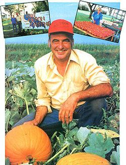
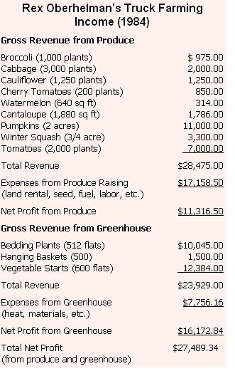
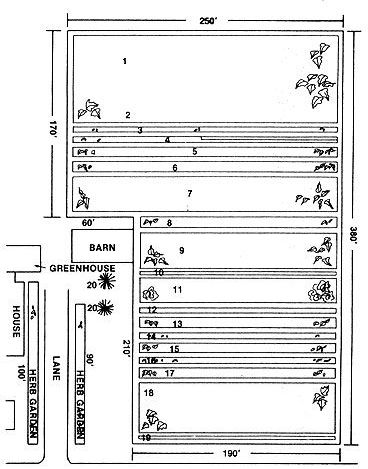
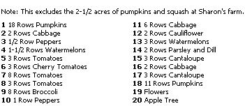

The Plowboy Interview
Rex Oberhelman lives in the southern end of Minnesota, atop the same threefoot-deep topsoil that's made the next state down - Iowa - famous. Not surprisingly, then, Rex is surrounded by 400-, 600-, and 1,000-acre farms: big spreads that sow corn and soybeans from highway to highway. (They were farming from fencerow, to fencerow, but then to increase production even more, they pulled up the fences.) Sadly, those big farms are going out of business in a big way these days.
Five years ago, Rex Oberhelman went out of business, too. The banks called in his loans and took both his family's 120-acre farm and his own supper-club business. He was left with five acres and his house.
The loss devastated Rex and his family. He lost his faith in himself. His marriage went sour. And he turned to alcohol.
Then a remarkable - almost incredible - turnaround occurred. After undergoing therapy for his drinking problem, Rex made himself a promise. He pledged to, each and every day, forage the garbage bins of local grocery stores to find food for his rabbits. This small activity provided him with a foothold from which to start rebuilding a sense of responsibility and commitment. Soon, it provided him with much more, as well.
Oberhelman quickly became aware of just how much produce the food stores were throwing away. Sometimes entire shipments arrived spoiled and were thrown out. He got to thinking, "Why couldn't I grow that same produce locally and sell it to the stores? It'd be fresher than what they buy now, so it'd last longer. And if I let them buy only the amounts they need, they'll have less spoilage from overpurchasing."
Five years later, Rex, his new wife, Sharon, and stepdaughters, Lisa and Jodi, are earning a net profit of $27,000 a year. They sell produce to local grocery stores, restaurants, and one wholesaler . . . sell greenhouse flowers, bedding plants, hanging baskets, and vegetable starts . . . and sell on farm produce to anyone who wants to drive out and buy it. They've figured out a way to make a living farming five acres in an area where 1,000-acre farms are failing right and left.
The story could end there, but it doesn't. Rex has now created a way to share his success. He's "licensing" 50 other farmers, each to grow the same vegetable crops he does. And he's got a buyer for all that produce: a big supermarket chain in Minneapolis. What's more, if that project succeeds, his next plan will be to create more groups of truck gardeners. Who knows . . . perhaps his ideas and dedication can help save hundreds of American farms!
Last September, staffer Pat Stone flew up to Fairmont, Minnesota, and spent a day at Rex's Blue Ribbon Gardens, talking with Oberhelman, seeing his setup, and just plain admiring the man's dedication and success. When you read the following edited interview with Rex (Sharon joins in occasionally), we think you'll be as impressed as Pat was.
By the way, Rex grows his crops 100% organically. (And he still goes to grocery dumps every day to forage feed for his rabbits.)
PLOWBOY: Rex, you didn't create this flourishing truck-farming operation overnight. Tell me how it developed.
REX: I started out in 1981. I went down to a local store that had seed packets for about nine cents each, bought $2.00 worth of seeds, and planted about an acre and a half of vegetables. And I made a lot of mistakes.
PLOWBOY: Like what?
REX: Like growing zucchini squash. Everybody could grow zucchini, so there was no demand for the product. Beans were another mistake - they took too much labor to harvest. My melons did poorly, too. By the time they were ready, everybody was so full of southern-grown melons that I couldn't sell ours profitably. But I learned from my mistakes.
PLOWBOY: What sold well the first year?
REX: Tomatoes, cabbage, pumpkins, and winter squash worked the first year.
PLOWBOY: How much money did you make from them?
REX: $2,800 net. I also had a part-time job - well, actually it was a full-time job - working as the night processing manager for Armour Food Company. We made the Dinner Classic frozen meals.
PLOWBOY: What happened the next year?
REX: The second year I developed another half-acre of ground, decided to raise more tomatoes, pumpkins, winter squash, and cabbage, and expanded by adding broccoli and cauliflower. I also built a small greenhouse - about 16' X 22' - and grew my own plants from seed. That helped me double my production and bring my farming income up from $2,800 to almost $6,000.
PLOWBOY: What was the breakdown of crops on those two acres of produce?
REX: It was about one-third in tomatoes, one-third in pumpkins and winter squash, and one-third in the other items. That's about the same ratio that we're using right now.
By the third year, 1983, I had to make a decision as to whether to keep the full-time job or do truck gardening full-time. I made the decision that truck gardening was what I wanted to do, and thank God I did.
I increased to four acres - doubled my growing area - and went with nine basic items: cabbage, cauliflower, broccoli, tomatoes, pumpkins, winter squash, peppers, cantaloupe, and watermelon; I'd found I could move melons in bigger metro markets where there was a constant demand for them. That year I netted close to $9,000.
PLOWBOY: That must have been a lean year.
REX: It was, but we were able to survive on it.
PLOWBOY: What happened in 1984?
REX: Last year, we grossed about $52,000 and ended up with a net profit of approximately $27,000.
PLOWBOY: You tripled your income? How did you do that?
REX: By developing my markets. I went from selling in just one community to selling in six different communities and to one wholesaler. I developed 24 customers, including the Red Owl Country Store, Godfather's Pizza, Heavenly Home Baked Pizza, Holiday Inn, Super Value, and Bonanza Steak House.
PLOWBOY: You were raising the same crops?
REX: Pretty much. We - by this time, my new wife, Sharon, and her two daughters were working with me - grew over 3,000 cabbages, 1,000 broccoli plants, 1,250 cauliflowers, over 2,000 tomatoes, and a 150' row of two specialty items: parsley and dill. We grew about 100 hills of watermelons and 250 hills of cantaloupe. We also had about 1-3/4 acres in pumpkins and 3/4 of an acre in winter squash - buttercup and acorn - that's over at Sharon's farm. We had 2-1/2 acres of squash and pumpkins there, and 2-1/10 acres of produce here at my place. [EDITOR'S NOTE: The sidebar on this page shows the full breakdown of Rex's income and expenses for 1984.]
PLOWBOY: Rex, almost half your acreage is in pumpkins and winter squash. Why?
REX: Winter squash keep well, so you have a lot of time to market them. And pumpkins are a very profitable one-shot item. The average supermarket will go through about 550 pumpkins for Halloween jack-o'-lanterns.
PLOWBOY: What do the stores charge their customers for those pumpkins?
REX: The small ones sell for $1.99, the medium ones for $2.49, and the large ones for $3.99. But I had to teach the stores to charge that much. They were used to paying the grower maybe 50 cents apiece and selling them for 88 cents and 99 cents. The grower wasn't making any money on them and neither were the stores.
So I made an arrangement with all four grocery stores in Fairmont. I gave them pumpkins on consignment and persuaded them all to set a higher price.
PLOWBOY: How much does it cost you to produce those pumpkins?
REX: About 45 cents or 50 cents per unit, and we'll get from $1.25 to $2.00 in return.
PLOWBOY: That's great! How many pumpkins will you grow?
REX: Our goal this year is to have at least 15,000 pumpkins.
PLOWBOY: 15,000? That must be more than four grocery stores can handle!
REX: Remember, we furnish 16 supermarkets now, and a wholesaler, too.
PLOWBOY: So are pumpkins your best income producer - your big-ticket item?
REX: Really, Pat, my success comes from raising a combination of crops. However, the single best item in terms of profit per cost of production is the pumpkin. I'd say the tomato comes next. But all the crops are important. You can't make the typical big-agriculture mistake of producing just one or two crops, because if the market goes to heck on those products, you're stuck. You've got to have the diversification whether you like to grow all those things or not.
PLOWBOY: Rex, I'd imagine it's harder to sell something than it is to grow it. What are your secrets to marketing produce?
REX: I show buyers that my product is fresher and better than California-shipped produce. A fresh, vine-ripened tomato is a lot easier for those buyers to sell than a hard, chewy imported one. As our slogan says, "Minnesota grown - tastes 2,000 miles fresher."
I also point out that since my produce is fresher, it'll have a longer shelf life and less chance of spoiling.
But the real secret to my success is that I fulfill buyers' needs without overloading them with excess inventory. If a restaurant uses a case and a half of tomatoes a week, it normally has to buy two cases - supply companies won't split a case. Well, half a case goes down the tubes, which makes the restaurant's cost of production higher. I sell exactly what the buyer wants to buy.
PLOWBOY: If there's any surplus, it's your surplus.
REX: That's right. That way I can charge restaurants the same price their other suppliers were getting, but they save money by not paying so much for shipping and for produce that they don't use.
PLOWBOY: Was it hard for those buyers to use your foods when they were available and then switch back to their old sources when you ran out? Didn't their suppliers say, "Look, give us all your business or none"?
REX: Some of them tried to do that, but the buyers felt like they were the ones running their businesses, so they called the suppliers' bluff.
PLOWBOY: If an individual wants to try to duplicate your operations, how should he or she start out?
REX: Go to four or five restaurants or grocery stores - restaurants are probably easier to get a foothold in - ask for their produce buyers, tell them what you'd like to do, and ask them to work with you. If you make them feel a part of what you're trying to do, they're much more likely to cooperate with you than if you just show up with a bunch of produce and say, "What'll you give me for it?"
You want to have every crop sold before you put a seed in the ground, so start working with your buyers before your growing season starts. They can tell you what they move, how much they move, and how much they pay for it, so you can figure out if you can produce it profitably. I've never found a market that wouldn't work with me if I was fair and honest with the people there and showed them that I could save them money and give them fresher produce.
And you do have to be honest with them. If something happens and you're not going to be able to supply a crop they need, you have to give them plenty of warning so they can line up another supplier. Then once you've got a proven track record of supplying a few grocery stores and restaurants, you can start trying to work with wholesalers. But you have to prove to wholesalers that you can consistently meet their needs.
PLOWBOY: How do you do that?
REX: By taking samples to them. I worked on my wholesaler for an entire growing year. Every week I went in with produce and asked him for business. He kept saying no, but finally he got tired of seeing me come in and said, "All right, we'll give you a try." Now he's one of my larger accounts.
PLOWBOY: Most people who grow foods organically charge extra for that higher-quality produce. You don't do that?
REX: No. You can't ask a premium price for a product if the demand isn't there for it. I grow organically because we eat the food ourselves and I don't want to eat any poison if I don't have to. But as far as sales go, the fact that our produce is organically grown is basically a freebie we're giving the consuming public.
PLOWBOY: Rex, let's take a break from all this dollars-and- cents talk for a while and get into how you grow your crops. How do you get the ground ready for planting each year?
REX: We work it with a tractor and a field cultivator. I don't plow every year; our soil is loose enough that it doesn't require that. Then we go through and spread compost by hand - we don't have a manure spreader.
PLOWBOY: How much compost do you use?
REX: We make close to ten tons of it each fall by combining manure, hay, and soil. We use about 2,000 bales of hay, the manure from my five pigs, ten goats, 50 chickens, and 20 rabbits; and some garden topsoil . . . all combined in about a 10-1-1 ratio.
Once that's spread, I use a machine that attaches to my old 1946 Allis Chalmers tractor to lay a strip of black plastic wherever we want a row. The machine also lays a dirt ridge on the edges of the plastic to hold it in place.
PLOWBOY: What's the black plastic do for you?
REX: That mulch cuts weeding by at least 60%, helps the soil warm earlier in spring, and stops surface evaporation. It's eliminated our need for irrigation. This year, for instance, we had a very dry spring - only 3.6 inches of rain from planting time until August - but our production was greater than ever because of the black plastic.
Plastic, together with the tires we grow our vine crops in, gives us a head start on the season, so we can put our plants out a week to ten days earlier than normal. And all we have to do to plant is cut slits in the plastic and stick the seedlings in.
After that, we just talk to our plants, observe them, and nurse them so they don't have any insect problems.
PLOWBOY: What pest problems have you had?
REX: Some years cucumber beetles attack the pumpkins and squash. We spray a lime-water solution from the tractor to control them. And Japanese beetles attack our cantaloupe and any tomatoes that have cracks. I don't really have a good, nontoxic solution yet, but we've been able to survive the attacks. Actually, insects aren't our worst problem.
PLOWBOY: What is?
REX: Weeds. Even though we have that black plastic mulch down and can tractor-cultivate between the rows, we spend more time out there pulling weeds than just about anything. We use a lot of good old "Armstrong Herbicide."
PLOWBOY: Do you do many other maintenance tasks, like staking tomatoes?
REX: Trying to stake 4,000 tomato plants would be very time-consuming, so we just let the tomatoes grow on the tires and plastic. We do prune the leaves to speed ripening - about four weeks before frost. Otherwise, 25 to 30% of the crop might not ripen in time.
PLOWBOY: Rex, you make the whole job sound easy. Now tell the truth.
REX: I work hard, but I like to work. Most people don't like to work because they don't feel good about themselves. They don't feel that they're producing great things for society or themselves.
I like what I'm doing. It's fun to watch things grow. It's fun to see people enjoy my products.
PLOWBOY: How many hours do you work each day?
REX: It varies. Many times, such as when we're grading and picking tomatoes at the height of the harvest, we work 20-hour days for a while.
SHARON: Sometimes we can't keep up with all the work. We'll be picking ripe tomatoes, for example, and by the time we get all the way down to the end of a row and look back around, it seems like all the others have turned red, too!
PLOWBOY: Is tomato harvest your busiest time?
REX: From then right through to the end of October. That's when we harvest squash and pumpkins. Picking, washing, and processing 20 tons of squash and pumpkins can be pretty time-consuming.
SHARON: We also work hard tending spring seedlings and putting out crops. It takes a lot of hours to put out 1,000 broccoli plants.
PLOWBOY: Do you ever get to take a vacation?
SHARON: I guess our vacation time is the winter months when we're tending plants in the greenhouse. We work only four or five hours a day then.
PLOWBOY: Tell me about your new greenhouse. It's pretty big - 30' X 50' . Wasn't it expensive?
REX: No. About all we had to pay for was the concrete for the footings.
SHARON: I'll never forget the day Rex came home and said, "Have I got a deal for you!" When he told me we were going to completely disassemble and rebuild a commercial greenhouse, I said, "We're going to what?"
REX: What happened was that a greenhouse operation in town went out of business. They were going to destroy the building to save paying taxes on it, so I made them a token payment of $100 for it, and we went from there. We started taking it down in October, and we'd finished attaching it to our home and were producing plants in it by the middle of February.
PLOWBOY: You put the whole thing together during a Minnesota winter?
REX: Yes, and the first time we bolted the frame together, the whole thing crashed down on us. We had to start all over. Then we put in all the glass-thousands of panes. Sometimes a pane would fall out and crash to the floor right after we moved away from it. It was a hard job, but it was worth it. I'd do it again.
PLOWBOY: What do you grow in the greenhouse?
REX: In January and February we start the bedding plants - the petunias, geraniums, shasta daisies, asters, and others - that we sell to neighbors and stores. Then, come the end of February and the first of March, we start our slow-growing field plants like tomatoes and peppers. Further down the road, we plant the broccoli, cauliflower, and cabbage. After that we germinate the pumpkins, squash, and melons. Starting those crops in the greenhouse gives us an early start on harvesting and marketing them. And since we're putting established plants in the field, we have a lot less loss to insects.
PLOWBOY: Do you use a special potting mix?
REX: We use one part rotted manure, one part sand, and two parts topsoil. We don't use a sterilized mix because we don't want to kill the good microbes in the soil. We don't push the seedlings' growth with a lot of extra fertilizers, either. We just give them one or two feedings of manure tea. Our plants don't grow as fast as they might otherwise, but they're stronger. They're not stressed out.
PLOWBOY: You raise a lot of seedlings for sale as well as for your own use, right?
REX: Last spring, we sold 600 flats of vegetable starts and 512 flats of bedding plants, and each flat had at least 72 plants. We also grew 500 hanging baskets with Swedish ivy, spider plants, impatiens, or vining geraniums in them. Hanging baskets are a very profitable item for us. We wholesale a six-inch basket for around $4.50 and a ten-inch one for $7.50 or $8.00. And they don't take up any of our growing space.
SHARON: We even do a few cemetery urns. People bring them by, and I put in a geranium, six or seven petite marigolds, and maybe some dracaenas, petunias, or nasturtiums. I arrange those and ask from $7.00 to $15.00 for them, depending on size. People tell me florists charge between $30 and $40 for the same service.
PLOWBOY: That's great. But how do you heat this greenhouse? It's 1,500 square feet, and winters get pretty harsh up here.
REX: We use a friction flow heater that Ron McMurty, a friend of mine, developed. Ron's got a patent pending on the design, so he doesn't like to tell too much about it. Basically, though, it uses a five-horsepower electric motor that spins a grain auger in a cylinder full of hydraulic fluid. The heat caused by that friction goes through some exchanger coils. Then 120°F air gets blown out into the room.
Actually, I can't explain why the thing works. We've had people from the Department of Energy look at it, and they've said that according to engineering formulas, it shouldn't work. But it does. It kept this single-paned greenhouse warm last winter for just $3.85 a day. And we put one in a friend's house to replace his gas furnace. The previous November, he'd spent $286 for gas. This November was the third coldest on record up here, yet with the friction flow heater, he paid only $63.50 for electricity.
We even had the electric company come out to check it. They've put four or five meters out here to see if their meter readings were off, but they didn't find anything.
PLOWBOY: That sounds almost unbelievable.
REX: I know, but I'm convinced that it works. If it's 20° below zero outside and you come inside and the greenhouse is so warm - 60° or 70° - that you have to take most of your clothes off to be comfortable, you know that the thing works.
PLOWBOY: Rex, you've pushed yourself awfully hard the last five years. You've learned how to grow and market grade-A produce and how to make a decent living truck farming. Now, you could just stand pat and keep running your operation. But you're not. Next year, you're going to make the quantum leap of trying to help 50 other farmers succeed as you have. Why?
REX: Five years ago, when I started my project, the farm economy in this area was still pretty good. Most farmers here had over a million dollars in assets. Their land was valued at $4,000 an acre.
Now they're broke. Their land is going for $650 or $675 an acre, and there are no bidders for it even at that price. Banks are closing - we've had three banks within a hundred miles of here close already. The farmers have got overproduction, no market, and huge debts. Consequently, 50% of them are facing bankruptcy and foreclosure in the next 18 months! They're being forced out of their livelihood. Families are splitting up, people are committing suicide - the people out here are under tremendous stress right now.
It's creating a ripple effect. Innocent individuals that are not in the farming business - filling station operators, grocery store managers, plumbers, and others - are losing their livelihoods, too. The problem is just compounding.
I've been through that loss myself. I was down and out and totally depressed. I know the hurt. So I want to help.
Two years ago, I started thinking about what I might be able to do. At first I thought I'd just show people how to do what I was doing. But then I realized that, hey, if I got five of my neighbors to do this, we'd all be competing for the same grocery, restaurant, and wholesale markets, and soon we'd be in a price war with one another. Then, just like the big farmers, we'd drive ourselves right out of business.
That led me to believe that we had to develop a market for mass units of produce. So I went up to the buyers with the Red Owl grocery store chain at Hopkins, a suburb of the Minneapolis-St. Paul area. Red Owl services 187 stores in that area . . . and buys $770,000 worth of produce a week! I asked the people there if they'd work with me, and they said that if I could consistently produce grade-A produce and truck it to them, they'd buy it.
I'd found a market. So I hit on the idea of licensing my idea and name, Blue Ribbon Gardens, to other area growers. After all, those guys who were foreclosed on and were left with five or seven acres of land wouldn't be able to make a living raising five acres of corn and beans. But they could get by if they grew the type of crops I've been growing and we marketed together to the Minneapolis area.
PLOWBOY: You're suggesting that farmers who've spent years riding giant tractors and growing megacrops of corn and soybeans turn totally around and raise five or seven acres of vegetables using mostly their own hand labor. Have you had trouble finding takers?
REX: No. I bet you I have 100 people who want to do it. Everyone who's come to me knows that it's going to take a lot of time and hard work. But they want to live in this area and keep what they've got. Some people do still want to work.
PLOWBOY: How are you going to finance all this?
REX: That's a long story. My good friend Kenny Crawford and I have been working on the figures for this for quite some time now. We know we'll need a food-processing center to gather, prepare, and ship all the produce. We'll need a large greenhouse to start all the farmers' plants. And we'll need to be able to lend these growers some money to finance their first season in this venture.
Well, the government of Minnesota had appropriated 3.5 million dollars to help deal with the farm crisis in this state, so we went to them with a fully worked-out proposal for our Blue Ribbon Garden licensing plan and asked them to lend us $750,000 to get started. For a good while, it looked as if they weren't going to help us at all, even though no one else had come up with any good proposals for spending the money they'd appropriated. Finally, though, they decided to lend us the whole thing . . . all three and a half million dollars!
PLOWBOY: What are you going to do with it all?
REX: First off, we'll construct that greenhouse and put 20 of Ron's friction heaters in there. It'll be 40,000 square feet - almost an acre - and will cost $750,000 to build. Then we'll have to spend $1,000,000 to build the food-processing center. We'll put the rest of the money into working capital for the growers. We'll give each one $27,500. Of that, $9,000 will go for living expenses, and the rest will go to pay for plants, extra labor, fuel, insurance, and other farming costs.
We'll furnish their working capital that first year, and recoup that money in two years out of their sales to us. By our projections, they'll each gross $53,000 the first year. After taxes and paying us back half their loans - with 8.5% interest - they should each net $22,600. The second year, they'll pay us back the rest of the loan and net $24,000. After that, they won't owe us anything, so their income should rise significantly.
PLOWBOY: $53,000 is the same gross income you have - can your licensed growers really earn that much? After all, a lot of your income has come from your greenhouse operation, and these growers won't have their own greenhouses.
REX: No, but they'll have something I never had . . . a market for their grade-B produce. Every year the Armour food-processing plant 12 miles from here - the one where I used to work - consumes $2,613,000 worth of four products: tomato paste, broccoli florets, frozen cabbage leaves, and pepper halves. The Tony Downs plant 30 miles away uses $360,900 of the same four products annually. Right now both companies import almost all of that produce from California, Mexico, and even Guatemala. Why, Armour imports two semi loads of broccoli florets a week, and the shipping freight for each load is $2,000! We'll process those same four products for Armour and Downs at our plant and save them the shipping charges.
So while our licensed growers will raise the nine basic crops we have, they'll put more focus on broccoli, cabbage, peppers, and tomatoes. They won't grow as many pumpkins as we do - otherwise we'd plug up the market with pumpkins. And they'll each grow the same amounts of each crop. It wouldn't be fair if one farmer got to grow the easy-to-raise crops and another got the real labor-demanding ones.
PLOWBOY: What about your farm? Surely you can't manage all this and keep your own truck farm going, too?
REX: I'm going to hire someone to help out on my place. He'll work with Sharon, Lisa, and Jodi. We may grow more than seven acres here so we can start testing other products like asparagus, strawberries, blueberries, and hubbard squash. We have to look for ways to keep expanding this operation.
PLOWBOY: Rex, the whole thing sounds fantastic! I hope it succeeds.
REX: Oh, I'm sure we'll have problems and situations to deal with. But it will work because the markets are already established. That's unusual in agriculture today: to find an item that you can market at a profit.
So all we need to do now is produce marketable crops, because these farmers can grow anything. They're expert growers - they produced themselves into the poorhouse with corn and beans. We've got to get them raising the right things - things they can make a living from.
PLOWBOY: Still, it's a big risk for you - to go from a secure one-family truck farm to coordinating Minnesota's "official" effort to save its farmers.
REX: It's a big risk, but if it works, we may be able to spread our ideas to other farms and other states. If not . . . well, if we can save just 50 families here the misery and grief they're experiencing today, it'll be worth it.
In fact, if we can save one family that agony, it'll be worth it.
• California Wonder Peppers
• Celebrity Tomatoes
• Rutgers Tomatoes
• Fireball Tomatoes
• Delicious Tomatoes
• Golden Acre Cabbage
• Connecticut Field Pumpkins
• Table Queen Acorn Squash
• Butternut Squash
• Buttercup Squash
• Far North Cantaloupe
• Charleston Gray Watermelon
• Self-Blanche Cauliflower
• Spartan Broccoli
|
 |
 |
 |
|
 |
|
|